Compare new and old peaks
Briana Mittleman
4/30/2019
Last updated: 2019-05-02
Checks: 6 0
Knit directory: apaQTL/analysis/
This reproducible R Markdown analysis was created with workflowr (version 1.3.0). The Checks tab describes the reproducibility checks that were applied when the results were created. The Past versions tab lists the development history.
Great! Since the R Markdown file has been committed to the Git repository, you know the exact version of the code that produced these results.
Great job! The global environment was empty. Objects defined in the global environment can affect the analysis in your R Markdown file in unknown ways. For reproduciblity it’s best to always run the code in an empty environment.
The command set.seed(20190411) was run prior to running the code in the R Markdown file. Setting a seed ensures that any results that rely on randomness, e.g. subsampling or permutations, are reproducible.
Great job! Recording the operating system, R version, and package versions is critical for reproducibility.
Nice! There were no cached chunks for this analysis, so you can be confident that you successfully produced the results during this run.
Great! You are using Git for version control. Tracking code development and connecting the code version to the results is critical for reproducibility. The version displayed above was the version of the Git repository at the time these results were generated.
Note that you need to be careful to ensure that all relevant files for the analysis have been committed to Git prior to generating the results (you can use wflow_publish or wflow_git_commit). workflowr only checks the R Markdown file, but you know if there are other scripts or data files that it depends on. Below is the status of the Git repository when the results were generated:
Ignored files:
Ignored: .DS_Store
Ignored: .Rhistory
Ignored: .Rproj.user/
Ignored: output/.DS_Store
Untracked files:
Untracked: .Rprofile
Untracked: ._.DS_Store
Untracked: .gitignore
Untracked: _workflowr.yml
Untracked: analysis/._PASdescriptiveplots.Rmd
Untracked: analysis/._cuttoffPercUsage.Rmd
Untracked: analysis/cuttoffPercUsage.Rmd
Untracked: apaQTL.Rproj
Untracked: code/._SnakefilePAS
Untracked: code/._SnakefilefiltPAS
Untracked: code/._aAPAqtl_nominal39ind.sh
Untracked: code/._apaQTLCorrectPvalMakeQQ.R
Untracked: code/._apaQTL_Nominal.sh
Untracked: code/._apaQTL_permuted.sh
Untracked: code/._bed2saf.py
Untracked: code/._callPeaksYL.py
Untracked: code/._chooseAnno2SAF.py
Untracked: code/._chooseSignalSite
Untracked: code/._chooseSignalSite.py
Untracked: code/._cluster.json
Untracked: code/._clusterPAS.json
Untracked: code/._clusterfiltPAS.json
Untracked: code/._config.yaml
Untracked: code/._config2.yaml
Untracked: code/._configOLD.yaml
Untracked: code/._convertNumeric.py
Untracked: code/._dag.pdf
Untracked: code/._extractGenotypes.py
Untracked: code/._filter5perc.R
Untracked: code/._filter5percPheno.py
Untracked: code/._filterpeaks.py
Untracked: code/._fixFChead.py
Untracked: code/._make5percPeakbed.py
Untracked: code/._makeFileID.py
Untracked: code/._makePheno.py
Untracked: code/._mergeAllBam.sh
Untracked: code/._mergeByFracBam.sh
Untracked: code/._mergePeaks.sh
Untracked: code/._namePeaks.py
Untracked: code/._peak2PAS.py
Untracked: code/._peakFC.sh
Untracked: code/._pheno2countonly.R
Untracked: code/._quantassign2parsedpeak.py
Untracked: code/._selectNominalPvalues.py
Untracked: code/._snakemakePAS.batch
Untracked: code/._snakemakefiltPAS.batch
Untracked: code/._submit-snakemakePAS.sh
Untracked: code/._submit-snakemakefiltPAS.sh
Untracked: code/.snakemake/
Untracked: code/APAqtl_nominal.err
Untracked: code/APAqtl_nominal.out
Untracked: code/APAqtl_nominal_39.err
Untracked: code/APAqtl_nominal_39.out
Untracked: code/APAqtl_permuted.err
Untracked: code/APAqtl_permuted.out
Untracked: code/BothFracDTPlotGeneRegions.err
Untracked: code/BothFracDTPlotGeneRegions.out
Untracked: code/DistPAS2Sig.py
Untracked: code/README.md
Untracked: code/Rplots.pdf
Untracked: code/Upstream100Bases_general.py
Untracked: code/aAPAqtl_nominal39ind.sh
Untracked: code/bam2bw.err
Untracked: code/bam2bw.out
Untracked: code/dag.pdf
Untracked: code/dagPAS.pdf
Untracked: code/dagfiltPAS.pdf
Untracked: code/extractGenotypes.py
Untracked: code/findbuginpeaks.R
Untracked: code/get100upPAS.py
Untracked: code/getSeq100up.sh
Untracked: code/getseq100up.err
Untracked: code/getseq100up.out
Untracked: code/log/
Untracked: code/run_DistPAS2Sig.err
Untracked: code/run_DistPAS2Sig.out
Untracked: code/run_distPAS2Sig.sh
Untracked: code/selectNominalPvalues.py
Untracked: code/snakePASlog.out
Untracked: code/snakefiltPASlog.out
Untracked: data/DTmatrix/
Untracked: data/PAS/
Untracked: data/QTLGenotypes/
Untracked: data/README.md
Untracked: data/SignalSiteFiles/
Untracked: data/ThirtyNineIndQtl_nominal/
Untracked: data/apaQTLNominal/
Untracked: data/apaQTLPermuted/
Untracked: data/apaQTLs/
Untracked: data/assignedPeaks/
Untracked: data/bam/
Untracked: data/bam_clean/
Untracked: data/bam_waspfilt/
Untracked: data/bed_10up/
Untracked: data/bed_clean/
Untracked: data/bed_clean_sort/
Untracked: data/bed_waspfilter/
Untracked: data/bedsort_waspfilter/
Untracked: data/exampleQTLs/
Untracked: data/fastq/
Untracked: data/filterPeaks/
Untracked: data/inclusivePeaks/
Untracked: data/inclusivePeaks_FC/
Untracked: data/mergedBG/
Untracked: data/mergedBW_byfrac/
Untracked: data/mergedBam/
Untracked: data/mergedbyFracBam/
Untracked: data/nuc_10up/
Untracked: data/nuc_10upclean/
Untracked: data/peakCoverage/
Untracked: data/peaks_5perc/
Untracked: data/phenotype/
Untracked: data/phenotype_5perc/
Untracked: data/sort/
Untracked: data/sort_clean/
Untracked: data/sort_waspfilter/
Untracked: nohup.out
Untracked: output/._.DS_Store
Untracked: output/dtPlots/
Untracked: output/fastqc/
Unstaged changes:
Modified: analysis/PASusageQC.Rmd
Modified: analysis/corrbetweenind.Rmd
Deleted: code/Upstream10Bases_general.py
Modified: code/apaQTLCorrectPvalMakeQQ.R
Modified: code/apaQTL_permuted.sh
Modified: code/bed2saf.py
Deleted: code/test.txt
Note that any generated files, e.g. HTML, png, CSS, etc., are not included in this status report because it is ok for generated content to have uncommitted changes.
These are the previous versions of the R Markdown and HTML files. If you’ve configured a remote Git repository (see ?wflow_git_remote), click on the hyperlinks in the table below to view them.
| File | Version | Author | Date | Message |
|---|---|---|---|---|
| Rmd | 0f39c9b | brimittleman | 2019-05-02 | add usage in old data |
| html | 3d56b3b | brimittleman | 2019-05-01 | Build site. |
| Rmd | e9021d2 | brimittleman | 2019-05-01 | compare usage in new, by ind set |
| html | 09090d7 | brimittleman | 2019-05-01 | Build site. |
| Rmd | f4f5b21 | brimittleman | 2019-05-01 | add number of peak per gene analysis |
| html | 03ea0f7 | brimittleman | 2019-05-01 | Build site. |
| Rmd | f587970 | brimittleman | 2019-05-01 | fix join |
| html | 2ec0f07 | brimittleman | 2019-05-01 | Build site. |
| Rmd | 3153f49 | brimittleman | 2019-05-01 | old hists |
| html | 15e195f | brimittleman | 2019-05-01 | Build site. |
| Rmd | f5e6fd6 | brimittleman | 2019-05-01 | add random 15 ind hists |
| html | 9ccb06e | brimittleman | 2019-04-30 | Build site. |
| Rmd | eb0bd95 | brimittleman | 2019-04-30 | add write out step |
| html | ac656aa | brimittleman | 2019-04-30 | Build site. |
| Rmd | f9b8195 | brimittleman | 2019-04-30 | understand usage of new pas |
library(reshape2)
library(tidyverse)── Attaching packages ──────────────────────────────────────────────────────────────── tidyverse 1.2.1 ──✔ ggplot2 3.1.0 ✔ purrr 0.3.2
✔ tibble 2.1.1 ✔ dplyr 0.8.0.1
✔ tidyr 0.8.3 ✔ stringr 1.3.1
✔ readr 1.3.1 ✔ forcats 0.3.0 ── Conflicts ─────────────────────────────────────────────────────────────────── tidyverse_conflicts() ──
✖ dplyr::filter() masks stats::filter()
✖ dplyr::lag() masks stats::lag()library(workflowr)This is workflowr version 1.3.0
Run ?workflowr for help getting startedThese results have 30k more PAS than the previous runs. I also see a confusing shift in mean usage for all of the PAS. I want to compare the distribution of usage for different sets of individuals to see if there is something inherently different about the 15 new individuals.
New vs old peaks
I want to compare the usage of the new peaks compared to the overall mean usage. To do this I need to seperate the new and old PAS.
newPAS5perc=read.table("../data/PAS/APAPAS_GeneLocAnno.5perc.bed", stringsAsFactors = F, col.names = c("chr", "start","end", "ID", "score", "strand"))
oldPAS5perc=read.table("../../threeprimeseq/data/peaks4DT/APAPAS_5percCov_fixedStrand.bed", stringsAsFactors = F, col.names = c("chr", "start", "end", "ID", "score", "strand"))
uniqnew=newPAS5perc %>% anti_join(oldPAS5perc, by=c("chr", "start", "end"))Pull in the usage of the peaks:
Total
totalPeakUs=read.table("../data/phenotype/APApeak_Phenotype_GeneLocAnno.Total.fc", header = T, stringsAsFactors = F) %>% separate(chrom, sep = ":", into = c("chr", "start", "end", "id")) %>% separate(id, sep="_", into=c("gene", "loc", "strand", "peak"))Warning: Expected 4 pieces. Additional pieces discarded in 4 rows [14735,
14736, 14737, 14738].ind=colnames(totalPeakUs)[8:dim(totalPeakUs)[2]]
totalPeakUs_CountNum=read.table("../data/phenotype/APApeak_Phenotype_GeneLocAnno.Total.CountsOnlyNumeric", col.names = ind)
#numeric with anno
totalPeak=as.data.frame(cbind(totalPeakUs[,1:7], totalPeakUs_CountNum))
totalPeakUs_CountNum_mean=rowMeans(totalPeakUs_CountNum)
#append mean to anno
TotalPeakUSMean=as.data.frame(cbind(totalPeakUs[,1:7],mean=totalPeakUs_CountNum_mean))uniqnewPasnum=uniqnew %>% separate(ID ,into=c("peaknum", "geneloc"),sep=":") %>% mutate(peak=paste("peak", peaknum, sep="")) %>% select(peak)Filter these inthe mean usage:
TotalPeakUSMeanClass= TotalPeakUSMean %>% mutate(New=ifelse(peak %in% uniqnewPasnum$peak,"new", "original")) %>% mutate(Cutoff=ifelse(mean>=.05, "Yes", "No"))
mean(TotalPeakUSMean$mean)[1] 0.2378282Plot:
ggplot(TotalPeakUSMeanClass, aes(y=mean,x=New)) + geom_violin() + geom_hline(yintercept = mean(TotalPeakUSMean$mean), col="red") + geom_hline(yintercept = .05, col="Blue")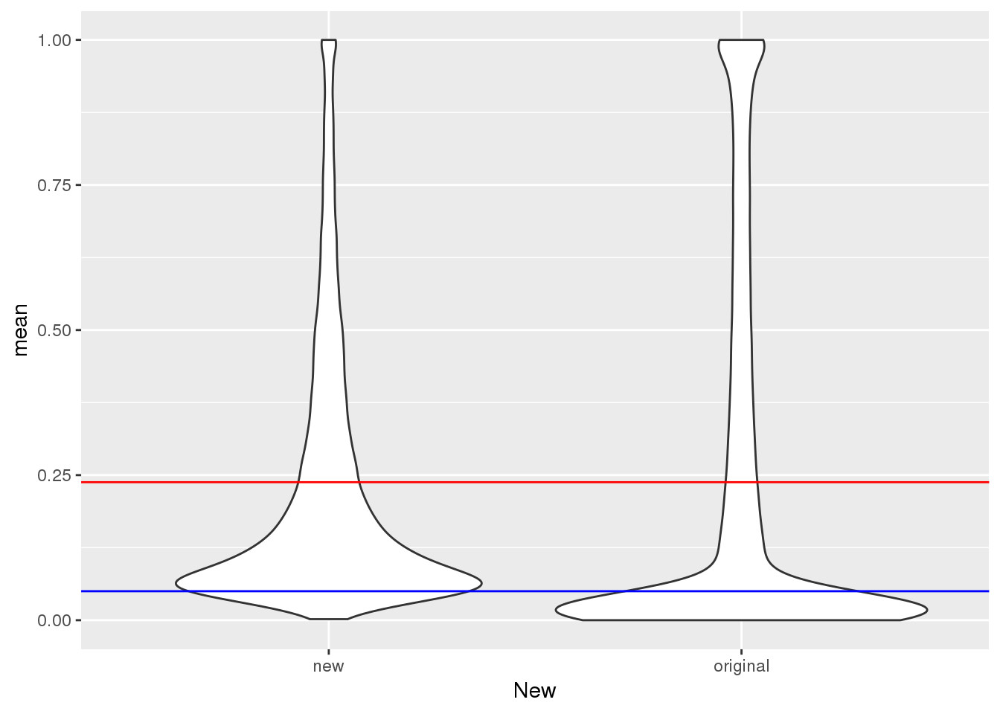
TotalPeakUSMeanClass_newonly= TotalPeakUSMeanClass %>% filter(New=="new")
ggplot(TotalPeakUSMeanClass_newonly, aes(y=mean, x="")) + geom_violin() + geom_hline(yintercept = mean(TotalPeakUSMean$mean), col="red") + geom_hline(yintercept = .05, col="Blue") + labs(x="", y="Mean Usage", title="Mean Usage of New PAS")
| Version | Author | Date |
|---|---|---|
| 09090d7 | brimittleman | 2019-05-01 |
ggplot(TotalPeakUSMeanClass_newonly, aes(x=mean)) + geom_histogram(bins=50) + geom_vline(xintercept = mean(TotalPeakUSMean$mean), col="red")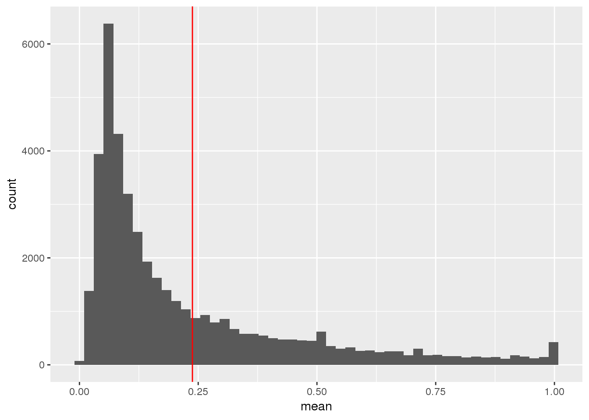
| Version | Author | Date |
|---|---|---|
| 09090d7 | brimittleman | 2019-05-01 |
This shows me the new peaks are the peaks that barely passed the cuttoff before.
write out file with information about new and old peaks
Peak_newOld=TotalPeakUSMeanClass %>% select(-mean)
write.table(Peak_newOld, file="../data/peaks_5perc/NewVOldPeaks.txt", col.names = T, row.names = F, quote=F)Distirubution in different sets of 15 ind
I want to see if the new 15 individuals are driving the change in the peak mean distribution. I want to make a function that take a vector of individuals, filters the usage dataframe and plots the histogram.
Total:
First I will upload the usage dataframe.
totCounts=read.table("../data/phenotype/APApeak_Phenotype_GeneLocAnno.Total.fc", stringsAsFactors = F, header = T)
ind=colnames(totCounts)[2:55]
totUsage=read.table("../data/phenotype/APApeak_Phenotype_GeneLocAnno.Total.CountsOnlyNumeric", stringsAsFactors = F, header = F,col.names = ind)
batch1.2.3=read.table("../data/MetaDataSequencing.txt", header=T,stringsAsFactors = F)%>% filter(fraction=="total") %>% select(line, batch) %>% filter(batch != 4)
oldind=batch1.2.3$line
batch4=read.table("../data/MetaDataSequencing.txt", header=T,stringsAsFactors = F)%>% filter(fraction=="total") %>% select(line, batch) %>% filter(batch == 4)
newInd=batch4$lineUsageHist= function(indVec,title,totUsage=totUsage){
totUsage_ind=totUsage %>% select(indVec)
meanVec=rowMeans(totUsage_ind)
hist(meanVec, main=title,xlab="Mean Usage")
}RUn this for different itterations of individuals:
Pick 15 random individuals from old:
sampl1=sample(oldind, 15)
sampl2=sample(oldind, 15)
sampl3=sample(oldind, 15)
sampl4=sample(oldind, 15)
png("../output/newtot.png")
par(mfrow=c(3,2))
UsageHist(indVec=newInd,title="Total Usage New (15ind)",totUsage=totUsage)
UsageHist(indVec=oldind,title="Total Usage Old (39 ind)",totUsage=totUsage)
UsageHist(indVec=sampl1,title="Total Usage Sample 15 Old",totUsage=totUsage)
UsageHist(indVec=sampl2,title="Total Usage Sample 15 Old",totUsage=totUsage)
UsageHist(indVec=sampl3,title="Total Usage Sample 15 Old",totUsage=totUsage)
UsageHist(indVec=sampl4,title="Total Usage Sample 15 Old",totUsage=totUsage)
dev.off()png
2 Nuclear
nucCounts=read.table("../data/phenotype/APApeak_Phenotype_GeneLocAnno.Nuclear.fc", stringsAsFactors = F, header = T)
ind=colnames(nucCounts)[2:55]
nucUsage=read.table("../data/phenotype/APApeak_Phenotype_GeneLocAnno.Nuclear.CountsOnlyNumeric", stringsAsFactors = F, header = F,col.names = ind)UsageHist_nuc= function(indVec,title,nucUsage=nucUsage){
nucUsage_ind=nucUsage %>% select(indVec)
meanVec=rowMeans(nucUsage_ind)
hist(meanVec, main=title,xlab="Mean Usage")
}png("../output/newnuc.png")
par(mfrow=c(3,2))
UsageHist_nuc(indVec=newInd,title="Nuclear Usage New (15ind)",nucUsage=nucUsage)
UsageHist_nuc(indVec=oldind,title="Nuclear Usage Old (39ind)",nucUsage=nucUsage)
UsageHist_nuc(indVec=sampl1,title="Nuclear Usage Sample 15 Old",nucUsage=nucUsage)
UsageHist_nuc(indVec=sampl2,title="Nuclear Usage Sample 15 Old",nucUsage=nucUsage)
UsageHist_nuc(indVec=sampl3,title="Nuclear Usage Sample 15 Old",nucUsage=nucUsage)
UsageHist_nuc(indVec=sampl4,title="Nuclear Usage Sample 15 Old",nucUsage=nucUsage)
dev.off()png
2 Old
oldtotalCount=read.table("../../threeprimeseq/data/phenotypes_filtPeakTranscript_noMP_GeneLocAnno/filtered_APApeaks_merged_allchrom_refseqGenes.GeneLocAnno_NoMP_sm_quant.Total.fixed.pheno.fc",header=T,stringsAsFactors = F)
indOld=colnames(oldtotalCount)[2:56]
oldtotalUsage=read.table("../../threeprimeseq/data/phenotypes_filtPeakTranscript_noMP_GeneLocAnno/filtered_APApeaks_merged_allchrom_refseqGenes.GeneLocAnno_NoMP_sm_quant.Total.fixed.pheno.CountsOnlyNumeric.txt",col.names = indOld,stringsAsFactors = F)png("../output/oldtot.png")
par(mfrow=c(3,2))
UsageHist(indVec=newInd,title="Old total Usage (15ind)",totUsage=oldtotalUsage)
UsageHist(indVec=oldind,title="Old total Usage (39ind)",totUsage=oldtotalUsage)
UsageHist(indVec=sampl1,title="Old total Usage sample 15 ind",totUsage=oldtotalUsage)
UsageHist(indVec=sampl2,title="Old total Usage sample 15 ind",totUsage=oldtotalUsage)
UsageHist(indVec=sampl3,title="Old total Usage sample 15 ind",totUsage=oldtotalUsage)
UsageHist(indVec=sampl4,title="Old total Usage sample 15 ind",totUsage=oldtotalUsage)
dev.off()png
2 oldnuclearCount=read.table("../../threeprimeseq/data/phenotypes_filtPeakTranscript_noMP_GeneLocAnno/filtered_APApeaks_merged_allchrom_refseqGenes.GeneLocAnno_NoMP_sm_quant.Nuclear.fixed.pheno.fc",header=T,stringsAsFactors = F)
indOldN=colnames(oldnuclearCount)[2:56]
oldnuclearUsage=read.table("../../threeprimeseq/data/phenotypes_filtPeakTranscript_noMP_GeneLocAnno/filtered_APApeaks_merged_allchrom_refseqGenes.GeneLocAnno_NoMP_sm_quant.Nuclear.fixed.pheno.CountsOnlyNumeric.txt",col.names = indOldN,stringsAsFactors = F)png("../output/oldnuc.png")
par(mfrow=c(3,2))
UsageHist_nuc(indVec=newInd,title="Old nuclear Usage (15ind)",nucUsage=oldnuclearUsage)
UsageHist_nuc(indVec=oldind,title="Old nuclear Usage (39ind)",nucUsage=oldnuclearUsage)
UsageHist_nuc(indVec=sampl1,title="Old nuclear Usage sample 15 ind",nucUsage=oldnuclearUsage)
UsageHist_nuc(indVec=sampl2,title="Old nuclear Usage sample 15 ind",nucUsage=oldnuclearUsage)
UsageHist_nuc(indVec=sampl3,title="Old nuclear Usage sample 15 ind",nucUsage=oldnuclearUsage)
UsageHist_nuc(indVec=sampl4,title="Old nuclear Usage sample 15 ind",nucUsage=oldnuclearUsage)
dev.off()png
2 Usage of new peaks in old data
I have the old usage. I want to filter the new peaks from this:
oldtotusage_anno=as.data.frame(cbind(chrom=oldtotalCount$chrom,oldtotalUsage )) %>% separate(chrom, into=c("chr", "start", "end", "peakID"), sep=":")
TotalPeakUSMeanClass_newonly=TotalPeakUSMeanClass %>% filter(New=="new")
oldtotusage_anno_new=oldtotusage_anno %>% semi_join(TotalPeakUSMeanClass_newonly, by=c("chr", "start", "end")) %>% select(-chr, -start,-end,-peakID)
oldtotusage_anno_new_mean=rowMeans(oldtotusage_anno_new)
plot(oldtotusage_anno_new_mean, main="Total Usage of new peaks in old data", ylab="old usage means Percent")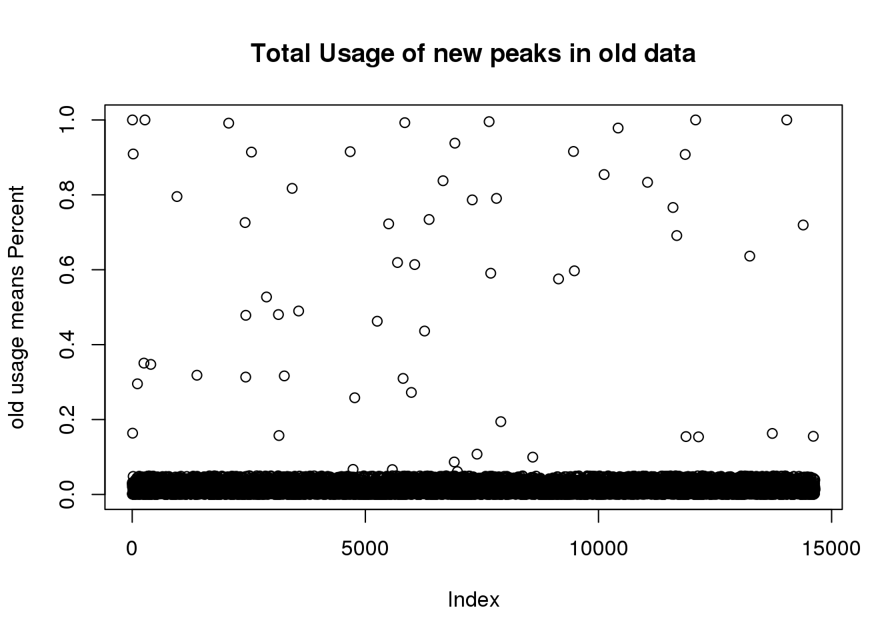
| Version | Author | Date |
|---|---|---|
| 09090d7 | brimittleman | 2019-05-01 |
length(oldtotusage_anno_new_mean)[1] 14642This shows me that we called 14 thousand of the new peaks in the old set but they were all super low coverage.
Where are the new peaks, genes with a lot of peaks? or genes with less peaks
newPAS5perc_pergene=newPAS5perc %>% separate(ID, into=c("peaknum", "geneID"), sep=":") %>% separate(geneID, into=c("gene", "loc"),sep="_") %>% group_by(gene) %>% summarise(nPeak=n())
ggplot(newPAS5perc_pergene,aes(x=nPeak)) + geom_histogram(bins=100)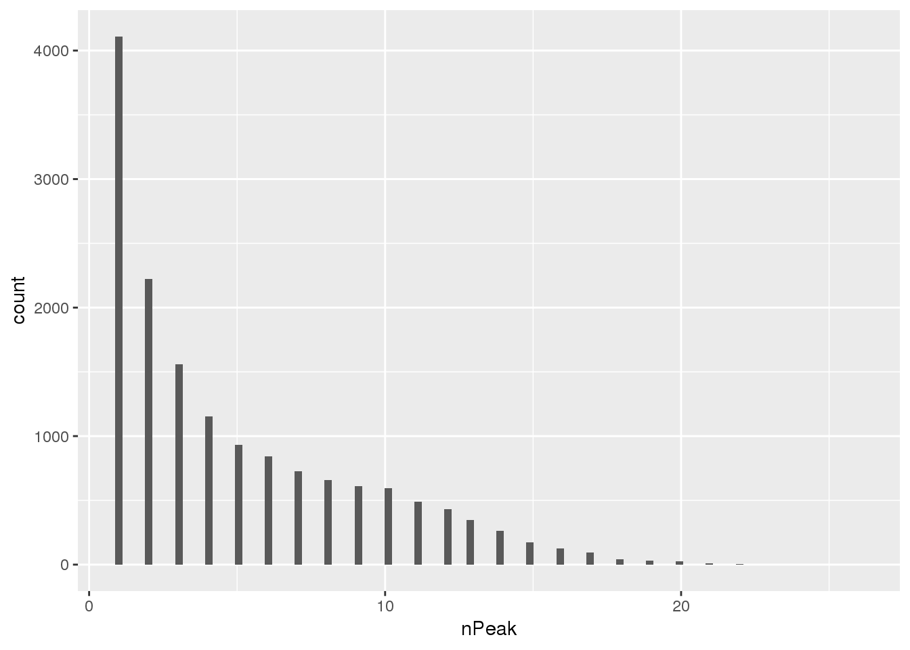
| Version | Author | Date |
|---|---|---|
| 09090d7 | brimittleman | 2019-05-01 |
nrow(newPAS5perc_pergene)[1] 15456Look at which genes the new peaks are in.
uniqnew_genes=uniqnew %>% separate(ID, into=c("peaknum", "geneID"), sep=":") %>% separate(geneID, into=c("gene", "loc"),sep="_") %>% group_by(gene) %>% summarise(npeakadded=n())
ggplot(uniqnew_genes, aes(x=npeakadded)) + geom_histogram(bins=100) + labs(title="Number of peaks added per gene\n(added peak in 10827 genes of 15456 genes)", x="Number of Peaks", y="Number of Genes")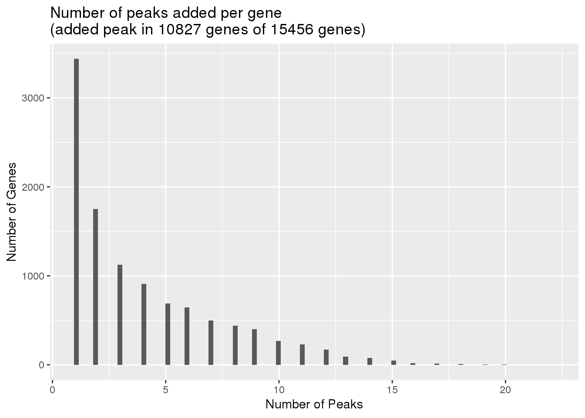
| Version | Author | Date |
|---|---|---|
| 09090d7 | brimittleman | 2019-05-01 |
Look at these genes compared to distribution for number of peaks in all peaks before filter
allPAS=read.table("../data/assignedPeaks/APApeaks.ALLChrom.Filtered.Named.GeneLocAnnoPARSED.SAF", header = T, stringsAsFactors = F) %>% separate(GeneID, into = c("peak", "Chrom", "Peakstart", "PeakEnd", "strand", "geneid"),sep=":") %>% separate(geneid, into=c("gene", "loc"), sep="_") %>% group_by(gene) %>% summarise(nPeakAll=n()) %>% mutate(AddedPeak=ifelse(gene %in% uniqnew_genes$gene, "yes", "no"))Warning: Expected 2 pieces. Additional pieces discarded in 4 rows [14735,
14736, 14737, 14738].ggplot(allPAS, aes(x=nPeakAll))+ geom_histogram(bins = 100) + facet_grid(~AddedPeak)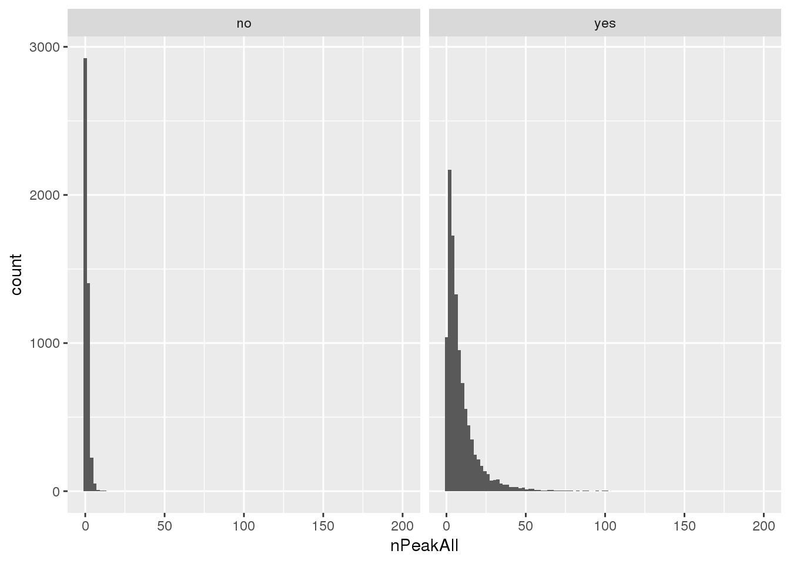
| Version | Author | Date |
|---|---|---|
| 09090d7 | brimittleman | 2019-05-01 |
Mean number of peaks for genes where we added, this could help us understand the distribution shift:
allPAS_withnewpas=allPAS %>% filter(AddedPeak=="yes")
summary(allPAS_withnewpas$nPeakAll) Min. 1st Qu. Median Mean 3rd Qu. Max.
1.000 3.000 6.000 9.725 12.000 201.000 Look at n peaks per gene in old data and npeaks per gene in new- join and subtract
#newPAS5perc_pergene
oldPAS5perc_pergene= oldPAS5perc%>% separate(ID, into=c("gene", "peaknum"), sep=":") %>% group_by(gene) %>% summarise(nPeakOld=n())
nrow(oldPAS5perc_pergene)[1] 15219Join:
npeakpergenebot=oldPAS5perc_pergene %>% full_join(newPAS5perc_pergene, by="gene") %>% replace_na(list(nPeakOld = 0, nPeak = 0)) %>% mutate(NewMinOld=nPeak-nPeakOld)
ggplot(npeakpergenebot, aes(x=nPeakOld, y=nPeak)) + geom_point() + geom_smooth(method="lm") + annotate("text", label="r2=0.4447", x=12, y=2) + labs(title="Number of Peaks in old vs new data",y="Number of peaks new data", x="Number of peaks old data")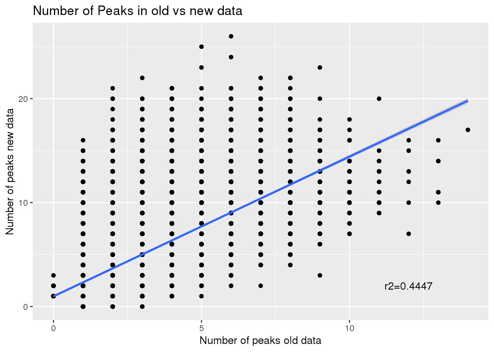
| Version | Author | Date |
|---|---|---|
| 09090d7 | brimittleman | 2019-05-01 |
Correlation between number of peaks before and after:
summary(lm(npeakpergenebot$nPeak~npeakpergenebot$nPeakOld))
Call:
lm(formula = npeakpergenebot$nPeak ~ npeakpergenebot$nPeakOld)
Residuals:
Min 1Q Median 3Q Max
-10.1193 -1.6746 -1.3302 0.9475 17.3254
Coefficients:
Estimate Std. Error t value Pr(>|t|)
(Intercept) 0.98570 0.04322 22.8 <2e-16 ***
npeakpergenebot$nPeakOld 1.34447 0.01201 112.0 <2e-16 ***
---
Signif. codes: 0 '***' 0.001 '**' 0.01 '*' 0.05 '.' 0.1 ' ' 1
Residual standard error: 3.185 on 15650 degrees of freedom
Multiple R-squared: 0.4448, Adjusted R-squared: 0.4447
F-statistic: 1.254e+04 on 1 and 15650 DF, p-value: < 2.2e-16summary(npeakpergenebot$NewMinOld) Min. 1st Qu. Median Mean 3rd Qu. Max.
-6.000 0.000 1.000 1.988 3.000 20.000 ggplot(npeakpergenebot, aes(x=NewMinOld)) + geom_histogram(bins=100)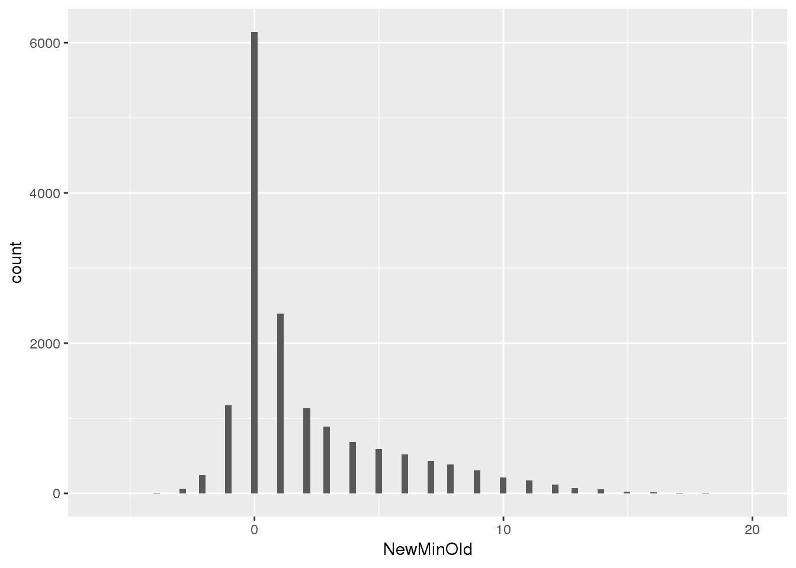
| Version | Author | Date |
|---|---|---|
| 09090d7 | brimittleman | 2019-05-01 |
Usage of new peaks by ind set
Total
totalPeak_inNew=totalPeak %>% filter(peak %in% uniqnewPasnum$peak)
totalPeak_inNew_melt=melt(totalPeak_inNew,id.vars=c("chr", "start","end", "gene","loc", "peak","strand"),value.name = "Usage" ,variable.name = "Ind") %>% mutate(New15=ifelse(Ind %in% batch4$line, "Yes", "No"))
ggplot(totalPeak_inNew_melt, aes(x=New15, y=Usage, fill=New15))+geom_boxplot(width=.5) + theme(legend.position = "none") + labs(x="Individuals in New batch")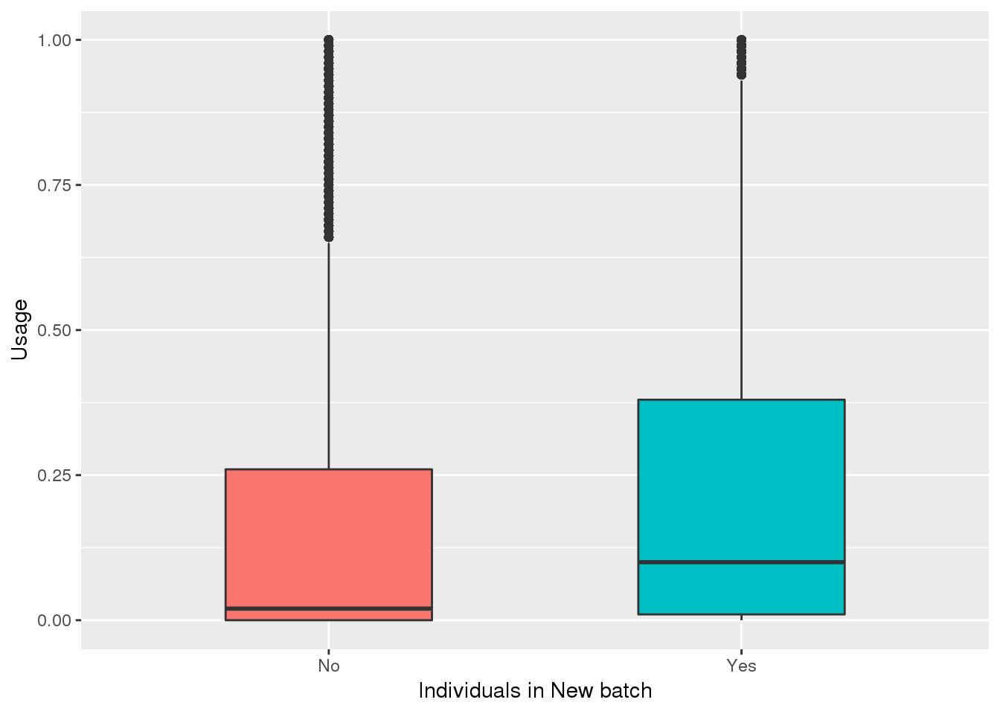
| Version | Author | Date |
|---|---|---|
| 3d56b3b | brimittleman | 2019-05-01 |
Look if means are different:
totalPeak_inNew_meltGroup=totalPeak_inNew_melt %>% group_by(New15,peak) %>% summarise(meanUsage=mean(Usage))
ggplot(totalPeak_inNew_meltGroup, aes(x=New15, y=meanUsage, fill=New15))+geom_boxplot(width=.5) + theme(legend.position = "none") + labs(x="Individuals in New batch", y="Mean Usage in Group", title="Mean usage for new PAS in 39 ind v new 15")
| Version | Author | Date |
|---|---|---|
| 3d56b3b | brimittleman | 2019-05-01 |
ggplot(totalPeak_inNew_meltGroup, aes(x=meanUsage, group=New15, fill=New15))+geom_density(alpha=.3) + labs( x="Mean Usage in Group", title="Mean usage for new PAS in 39 ind v new 15")+ scale_fill_discrete(name = "Ind in new 15")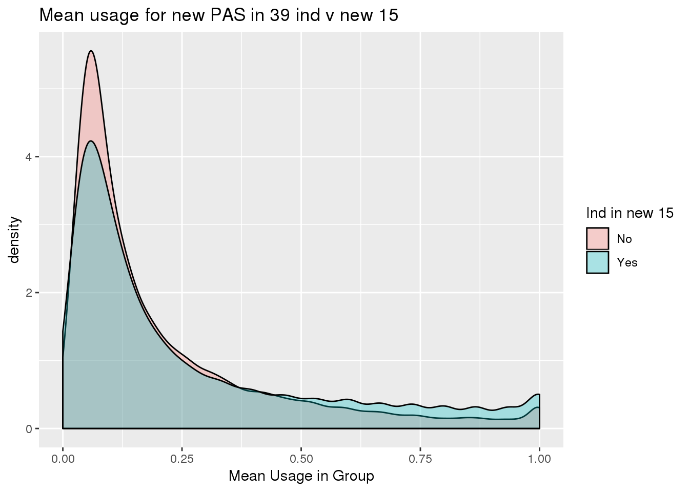
| Version | Author | Date |
|---|---|---|
| 3d56b3b | brimittleman | 2019-05-01 |
totalPeak_inNew_meltGroup_spre=totalPeak_inNew_meltGroup %>% spread(New15,meanUsage)
ggplot(totalPeak_inNew_meltGroup_spre,aes(x=No, y=Yes)) + geom_point() + geom_density_2d() + geom_smooth(method = "lm")+annotate("text", label="New=old+0.053680" ,x=.8,y=0) + labs(x="Original 39 Mean", y="Original 15 Mean", title="Mean Usage in New data by Ind set")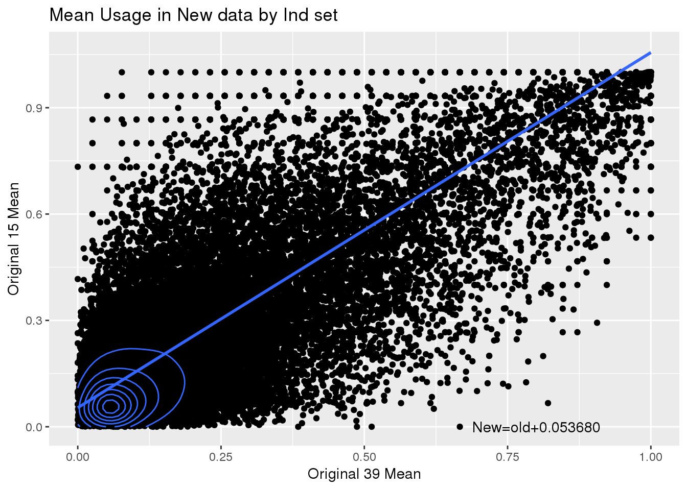
summary(lm(data=totalPeak_inNew_meltGroup_spre, Yes~No))
Call:
lm(formula = Yes ~ No, data = totalPeak_inNew_meltGroup_spre)
Residuals:
Min 1Q Median 3Q Max
-0.80920 -0.08513 -0.03408 0.05478 0.86924
Coefficients:
Estimate Std. Error t value Pr(>|t|)
(Intercept) 0.053680 0.001055 50.86 <2e-16 ***
No 1.002046 0.003416 293.35 <2e-16 ***
---
Signif. codes: 0 '***' 0.001 '**' 0.01 '*' 0.05 '.' 0.1 ' ' 1
Residual standard error: 0.1584 on 42931 degrees of freedom
Multiple R-squared: 0.6672, Adjusted R-squared: 0.6671
F-statistic: 8.605e+04 on 1 and 42931 DF, p-value: < 2.2e-16Nuclear
nuclearPeakUs=read.table("../data/phenotype/APApeak_Phenotype_GeneLocAnno.Nuclear.fc", header = T, stringsAsFactors = F) %>% separate(chrom, sep = ":", into = c("chr", "start", "end", "id")) %>% separate(id, sep="_", into=c("gene", "loc", "strand", "peak"))Warning: Expected 4 pieces. Additional pieces discarded in 4 rows [14735,
14736, 14737, 14738].ind=colnames(nuclearPeakUs)[8:dim(nuclearPeakUs)[2]]
nuclearPeakUs_CountNum=read.table("../data/phenotype/APApeak_Phenotype_GeneLocAnno.Nuclear.CountsOnlyNumeric", col.names = ind)
#numeric with anno
nuclearPeak=as.data.frame(cbind(nuclearPeakUs[,1:7], nuclearPeakUs_CountNum))
nuclearPeak_inNew=nuclearPeak %>% filter(peak %in% uniqnewPasnum$peak)
nuclearPeak_inNew_melt=melt(nuclearPeak_inNew,id.vars=c("chr", "start","end", "gene","loc", "peak","strand"),value.name = "Usage" ,variable.name = "Ind") %>% mutate(New15=ifelse(Ind %in% batch4$line, "Yes", "No"))nuclearPeak_inNew_meltGroup=nuclearPeak_inNew_melt %>% group_by(New15,peak) %>% summarise(meanUsage=mean(Usage))
ggplot(nuclearPeak_inNew_meltGroup, aes(x=New15, y=meanUsage, fill=New15))+geom_boxplot(width=.5) + theme(legend.position = "none") + labs(x="Individuals in New batch", y="Mean Usage in Group", title="Nuclear Mean usage for new PAS in 39 ind v new 15")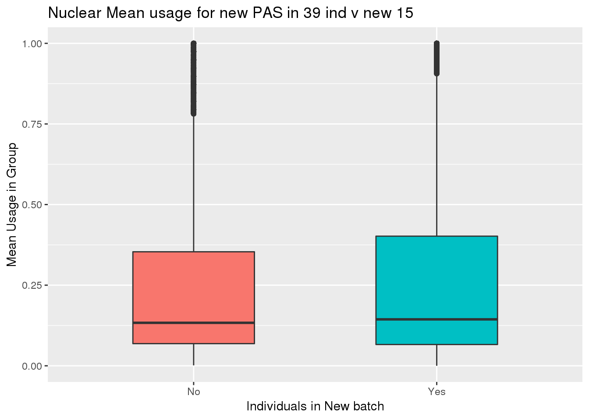
ggplot(nuclearPeak_inNew_meltGroup, aes(x=meanUsage, group=New15, fill=New15))+geom_density(alpha=.3) + labs( x="Mean Usage in Group", title="Nuclear Mean usage for new PAS in 39 ind v new 15")+ scale_fill_discrete(name = "Ind in new 15")
Seperate the usage for old data by ind set
oldtotusage_annoM=melt(oldtotusage_anno, id.vars=c("chr","start","end","peakID"), value.name = "Usage", variable.name = "Ind") %>% mutate(New15=ifelse(Ind %in% batch4$line, "Yes", "No"))
oldtotusage_annoM_new=oldtotusage_annoM %>% semi_join(TotalPeakUSMeanClass_newonly, by=c("chr","start", "end")) %>% group_by(New15,peakID) %>% summarise(meanUsage=mean(Usage))
ggplot(oldtotusage_annoM_new, aes(x=New15, y=meanUsage, fill=New15))+geom_boxplot(width=.5) + theme(legend.position = "none") + labs(x="Individuals in New batch", y="Mean Usage in Group", title="Total mean usage for new PAS in old data")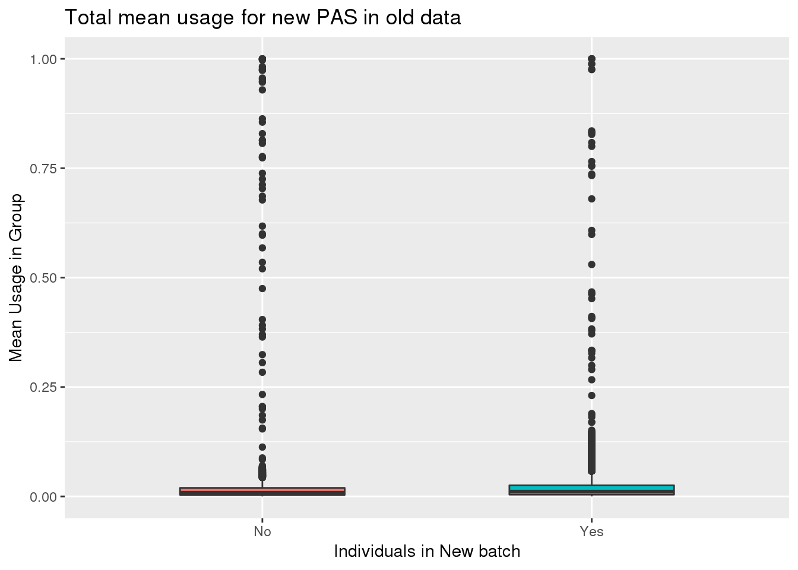 This shows the peaks had super low usage in both sets of individuals.
spread
oldtotusage_annoM_new_spread=oldtotusage_annoM_new %>% spread(New15,meanUsage)
ggplot(oldtotusage_annoM_new_spread, aes(x=No, y=Yes))+ geom_point() +geom_density_2d() + geom_smooth(method = "lm") + annotate("text", label="New=.7Old+.009" ,x=.25,y=.75) + labs(x="Original 39 Mean", y="Original 15 Mean", title="Mean Usage in old data by Ind set")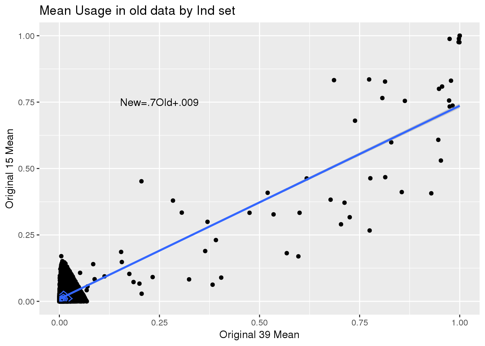
summary(lm(data=oldtotusage_annoM_new_spread, Yes~No))
Call:
lm(formula = Yes ~ No, data = oldtotusage_annoM_new_spread)
Residuals:
Min 1Q Median 3Q Max
-0.30595 -0.01113 -0.00586 0.00590 0.32477
Coefficients:
Estimate Std. Error t value Pr(>|t|)
(Intercept) 0.009067 0.000217 41.78 <2e-16 ***
No 0.727159 0.004500 161.58 <2e-16 ***
---
Signif. codes: 0 '***' 0.001 '**' 0.01 '*' 0.05 '.' 0.1 ' ' 1
Residual standard error: 0.02478 on 14640 degrees of freedom
Multiple R-squared: 0.6407, Adjusted R-squared: 0.6407
F-statistic: 2.611e+04 on 1 and 14640 DF, p-value: < 2.2e-16Yes=.7(No)
sessionInfo()R version 3.5.1 (2018-07-02)
Platform: x86_64-pc-linux-gnu (64-bit)
Running under: Scientific Linux 7.4 (Nitrogen)
Matrix products: default
BLAS/LAPACK: /software/openblas-0.2.19-el7-x86_64/lib/libopenblas_haswellp-r0.2.19.so
locale:
[1] LC_CTYPE=en_US.UTF-8 LC_NUMERIC=C
[3] LC_TIME=en_US.UTF-8 LC_COLLATE=en_US.UTF-8
[5] LC_MONETARY=en_US.UTF-8 LC_MESSAGES=en_US.UTF-8
[7] LC_PAPER=en_US.UTF-8 LC_NAME=C
[9] LC_ADDRESS=C LC_TELEPHONE=C
[11] LC_MEASUREMENT=en_US.UTF-8 LC_IDENTIFICATION=C
attached base packages:
[1] stats graphics grDevices utils datasets methods base
other attached packages:
[1] workflowr_1.3.0 forcats_0.3.0 stringr_1.3.1 dplyr_0.8.0.1
[5] purrr_0.3.2 readr_1.3.1 tidyr_0.8.3 tibble_2.1.1
[9] ggplot2_3.1.0 tidyverse_1.2.1 reshape2_1.4.3
loaded via a namespace (and not attached):
[1] Rcpp_1.0.0 cellranger_1.1.0 compiler_3.5.1 pillar_1.3.1
[5] git2r_0.23.0 plyr_1.8.4 tools_3.5.1 digest_0.6.18
[9] lubridate_1.7.4 jsonlite_1.6 evaluate_0.12 nlme_3.1-137
[13] gtable_0.2.0 lattice_0.20-38 pkgconfig_2.0.2 rlang_0.3.1
[17] cli_1.0.1 rstudioapi_0.10 yaml_2.2.0 haven_1.1.2
[21] withr_2.1.2 xml2_1.2.0 httr_1.3.1 knitr_1.20
[25] hms_0.4.2 generics_0.0.2 fs_1.2.6 rprojroot_1.3-2
[29] grid_3.5.1 tidyselect_0.2.5 glue_1.3.0 R6_2.3.0
[33] readxl_1.1.0 rmarkdown_1.10 modelr_0.1.2 magrittr_1.5
[37] whisker_0.3-2 MASS_7.3-51.1 backports_1.1.2 scales_1.0.0
[41] htmltools_0.3.6 rvest_0.3.2 assertthat_0.2.0 colorspace_1.3-2
[45] labeling_0.3 stringi_1.2.4 lazyeval_0.2.1 munsell_0.5.0
[49] broom_0.5.1 crayon_1.3.4